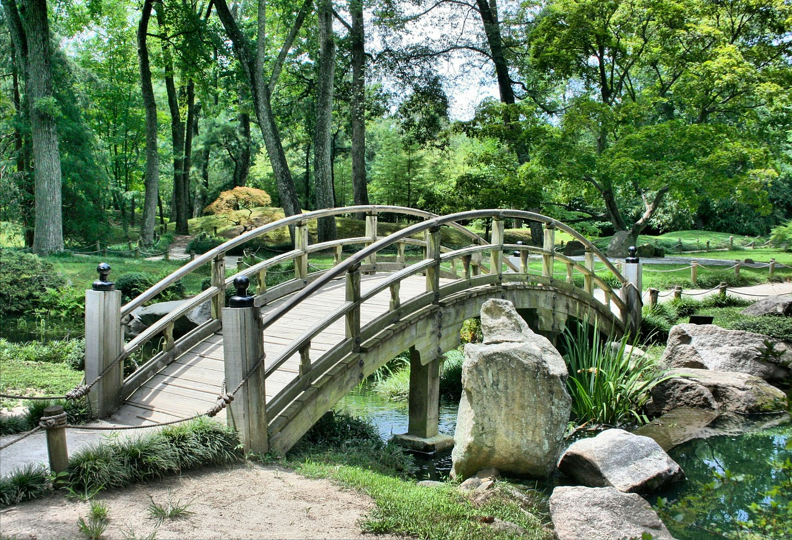
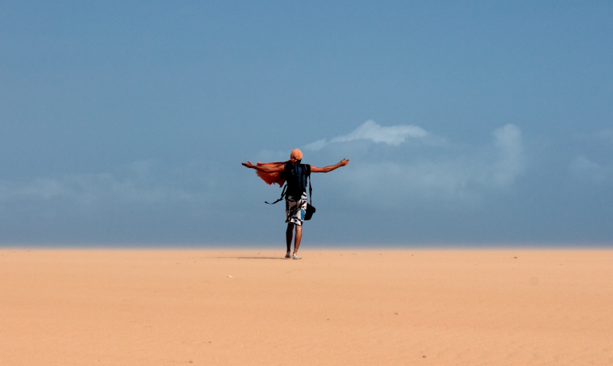

Montes Nevadosdate_range_Publido ellocation_on_Ubición:
Anímate a programar una expedición por los páramos y nevados del territorio nacional para darse cuenta de nuestra riqueza hídrica, de fauna y flora. Apoya el turismo ecológico y goza de unos días de descanso envidiables.
Aunque estamos acostumbrados a asociar vacaciones con playa, sol, brisa y mar, la nieve atrae a quienes consideran la aventura y los pequeños retos como parte de la diversión. Si bien Colombia se aleja de la imagen de postal turística que pueden tener los paisajes de Los Alpes Suizos o Franceses, en donde las estaciones de esquí seducen a cientos de viajeros, lo cierto es que en el país se pueden satisfacer las ganas de ver estelas blancas de hielo que recubren las montañas y congelan los huesos.Comentarios:
La Guajiradate_range_Publido ellocation_on_Ubición:
Visitar la Guajira representa todo para los sentidos, pues las bondades naturales de este ecosistema desértico y los habitantes, en su mayoría indígenas Wayuu que aún conservan aspectos tradicionales, conviven armónicamente en este remoto y tranquilo lugar donde la arena blanca de la playa besa al mar turquesa y las dunas se alzan, rompiendo la vista interminable del desierto. Es, sin duda, de los mejores lugares para recibir el amanecer o ver caer el sol, sin dejar de lado las noches frescas en compañía de un cielo absolutamente estrellado. Allí podrás probar las delicias gastronómicas preparadas por los habitantes conocedores de la región.
Comentarios:
Nací en Brasil pero resido en Colombia, cuando llegue por primera vez a este país me fascinó todo de él, desde su cultura hasta su comida, desde las grandes montañas de los andes y sus bosques hasta las llanuras, valles, selvas playas y muchas otras partes que posee este maravilloso sitio; yo recorro con mi cámara cada rincón de Colombia y ahora el mundo para traerte lo hermoso que de este planeta.